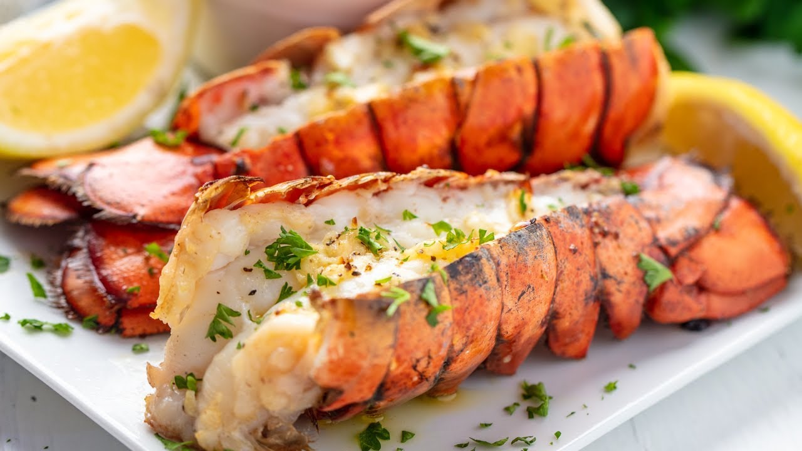

Broiled Lobster Tails

Description
Seafood is known for being classy and is often served at weddings and other lavish events.
Broiled Lobster tails is an exquisite dish which is extremely tasty.
Ingredients
- Lobster Tails
- Butter
- Garlic
- Lemon Juice
- Parsley
- Salt and Pepper
Directions
How To Butterfly a Lobster Tail
- To begin Place the lobster tails on a cutting board.
- Then take kitchen shears and cut down the shell all the way to the fin. Use your fingers and pry the meat up from the shell, gently.
- Keep it attached to the base of the tail, then life the meat so it’s resting on top of the split shell.
- Now you’re done! Brush the lobster with the lemon butter and broil.
How To Make Broiled Lobster Tails
- Begin by heating the broiler and make sure the oven rack is around 6-8 inches below the broiler.
- Melt the butter in a small bowl.
- Then add in the lemon juice, parsley, and garlic. Reserve half of the garlic butter for dipping.
- Sprinkle butterflied lobster some salt and pepper, then add garlic butter sauce with a basting brush.
- Broil the lobster tails for 10 minutes, and add some more garlic butter halfway through.
- When the lobster tails are done, they will be a white opaque color, and the internal temperature will be 145 degrees.
- Add some chopped fresh parsley as a garnish and dip into reserved garlic lemon butter.
- Its done!